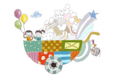
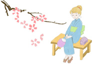
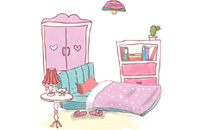
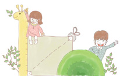
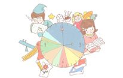

登录手工客
帐号
密码
忘记密码
没有帐号，从
这里注册
请输入用户名或邮箱
请输入密码
首页
教程分类
图文教程
视频教程
布艺
皮艺
纸艺
木艺
饰品
编织
刺绣
雕塑雕刻
模型
橡皮章
羊毛毡
旧物改造
美食烘焙
粘土陶艺
手绘印染
滴胶热缩
金属工艺
电子科技
手工护肤
园艺多肉
其他
查看全部分类
手工圈
材料商店
手工市集
专题
活动
动态
登录
注册
10
我的消息
+0
@我的
+0
私信
+0
系统消息
+0
等级与积分
我是买家
我是卖家
我是老师
我的特训营
我上传的教程
我的手工圈
我关注的人
开通会员
退出
分类浏览
分类

布艺
皮艺
纸艺
木艺
饰品
编织
刺绣
雕塑雕刻
模型
橡皮章
羊毛毡
旧物改造
美食烘焙
粘土陶艺
手绘印染
滴胶热缩
金属工艺
电子科技
手工护肤
园艺多肉
其他
风格

可爱
复古
清新
森系
民族
摇滚朋克
原宿系
英伦
北欧
田园
欧美
简洁
场景

办公室
教室
卧室
客厅
阳台
院子
室外
车内
随处
厨房
聚会
书房
人群
儿童
妈妈
老年人
森女
小清新
宅男
宅女
上班族
女孩子
男孩子
学生党
极客
爸爸
创客
节日
春节
清明节
端午节
父亲节
母亲节
儿童节
中秋节
万圣节
圣诞节
情人节
七夕
愚人节
生日
婚礼
日常
感恩节
工具

剪刀
打孔器
直尺
刻刀
美工刀
水消笔
定位针
划粉
铅笔
刷子
马克笔
水彩笔
热胶枪
锥子
钳子
砂纸
刨子
3D打印机
锤子
镊子
502胶
UV胶
AB胶
白乳胶
硅胶
胶枪（胶棒）
酒精胶
中性笔
砧子
冲子
剁刀
测量工具
电烙铁
喷漆枪
笔刀
塑形橡皮
定画液
垫板
热风枪
彩色铅笔
水彩
硅胶模具
量杯
塑料杯
烧杯
搅拌棒
一次性手套
滴管
针筒
电子称
曲线锯
锉刀
锯子
502胶水
热熔胶
炭笔
橡皮
工具刀
水笔
彩铅
T针
圆头针
工艺锤
尖嘴钳
平口钳
打磨工具
熔焊机
拉丝板
小镊子
方夹
弹簧夹
绣珠
绣绷
大头针
U型针/花叉
棒针
钩针
卷尺
针线
缝纫机
尺子
拉链
纽扣
材料
羊毛毡
不织布
银
黄铜
铝
焊丝
焊锡浆
橡皮砖
硫酸纸
染料
印台
卡纸
木柄
软木垫
热缩片
光油
砂纸
橡皮
滴胶
水晶滴胶AB 胶
竹筷
竹签
牙签
竹片
A4纸
小叶紫檀
紫光檀木
木板
黑檀
橡木
苏木
彩色玻璃
布料
皮料
木料
贝壳
特种纸
画纸
T恤
麻布
棉布
丝绸
牛仔衣
泡沫球
湿毡网布
光纤
导线
电阻
电池
难度
初学
入门
能手
高手
大师
制作时间

< 1小时
< 半天
< 一天
< 半星期
< 一星期